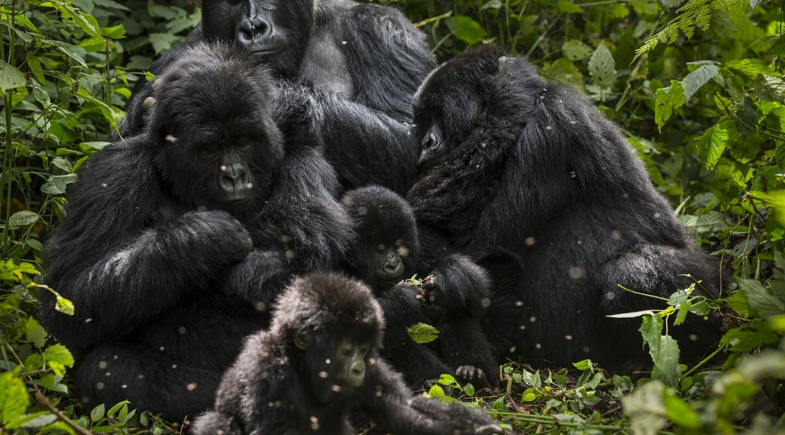
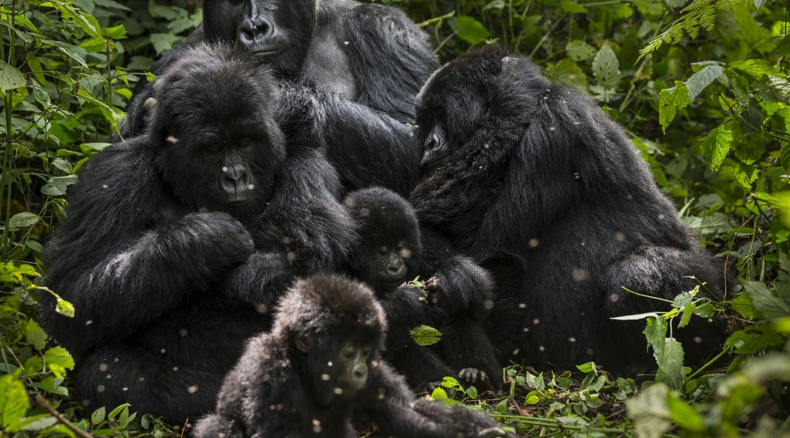
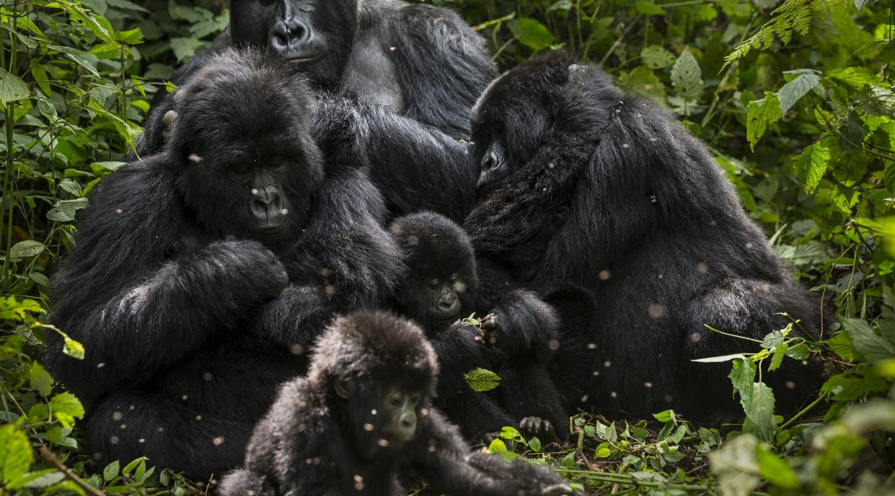

Bird 2
Description of Bird 2

Description of Bird 2
Extinction is the termination of a taxon by the death of its last member. The moment of extinction is generally considered to be the death of the last individual of the species, although the capacity to breed and recover may have been lost before this point. Extinction therefore becomes a certainty when there are no surviving individuals that can reproduce and create a new generation. The reasons for extinction can be natural or caused by human activities such as habitat destruction, pollution, and overhunting.
Extinct animals are species that no longer exist on Earth. They are animals that have died out and have no living representatives. Extinction can occur naturally over geological time spans, but human activity has accelerated the rate of extinction in recent times. Some well-known extinct animals include the dodo, Tasmanian tiger, and passenger pigeon.

Smilodon is a genus of felids belonging to the extinct subfamily Machairodontinae. It is one of the best known saber-toothed predators and prehistoric mammals. Although commonly known as the saber-toothed tiger, it was not closely related to the tiger or other modern catsIn North America, Smilodon hunted large herbivores such as bison and camels, and it remained successful even when encountering new prey species in South America. Smilodon is thought to have killed its prey by holding it still with its forelimbs and biting it, but it is unclear in what manner the bite itself was delivered.
The woolly mammoth (Mammuthus primigenius) is an extinct species of mammoth that lived from the Middle Pleistocene until its extinction in the Holocene epoch. It was one of the last in a line of mammoth species, beginning with the African Mammuthus subplanifrons in the early Pliocene.The appearance and behaviour of this species are among the best studied of any prehistoric animal because of the discovery of frozen carcasses in Siberia and North America, as well as skeletons, teeth, stomach contents, dung, and depiction from life in prehistoric cave paintings. Mammoth remains had long been known in Asia before they became known to Europeans in the 17th century.
The dodo (Raphus cucullatus) is an extinct flightless bird that was endemic to the island of Mauritius, which is east of Madagascar in the Indian Ocean. The dodo's closest relative was the also-extinct and flightless Rodrigues solitaire. The two formed the subfamily Raphinae, a clade of extinct flightless birds that were a part of the family which includes pigeons and doves. The closest living relative of the dodo is the Nicobar pigeon. A white dodo was once thought to have existed on the nearby island of Réunion, but it is now believed that this assumption was merely confusion based on the also-extinct Réunion ibis and paintings of white dodos.
The passenger pigeon or wild pigeon (Ectopistes migratorius) is an extinct species of pigeon that was endemic to North America. Its common name is derived from the French word passager, meaning "passing by", due to the migratory habits of the species. The scientific name also refers to its migratory characteristics. The morphologically similar mourning dove (Zenaida macroura) was long thought to be its closest relative, and the two were at times confused, but genetic analysis has shown that the genus Patagioenas is more closely related to it than the Zenaida doves.